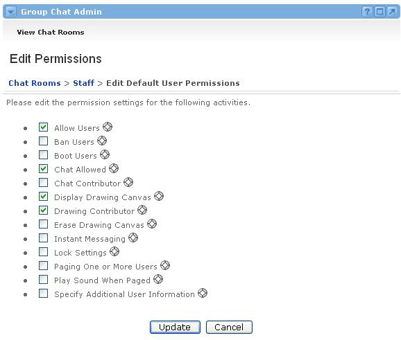

Setting Permissions for a Chat Room
After enabling a chat room for the first time, the default permissions must be determined.
- The Edit Default User Permissions screen appears, containing a list of permissions.
- Check the box(es) next to any permission setting that users should have by default.
- Uncheck any box(es) for permissions that users should not have by default.
- Click the Update button when finished.

Changing Default Permissions
You will now see that the chat room is listed as Enabled. To change the default user permissions, follow these steps:
- Click the Default User link.
- You can also change an individual user's permissions, by clicking on the Default link next to that user's name.
- If you change a user's individual permissions, they will be listed as Custom in the User Permissions column. To revert any user back to the default permission settings, simply click on the Delete icon in the User Permissions column.

Search in the Chat Admin Channel
If a chat room has been enabled for a group with a large number of users, it is possible to search for a specific user for whom to customize permissions from within the Chat Admin channel. Simply enter all or part of a person's Username, First Name, or Last Name into the appropriate field of the search section, located at the bottom of the Chat Admin channel. Click the Search button to execute the search.